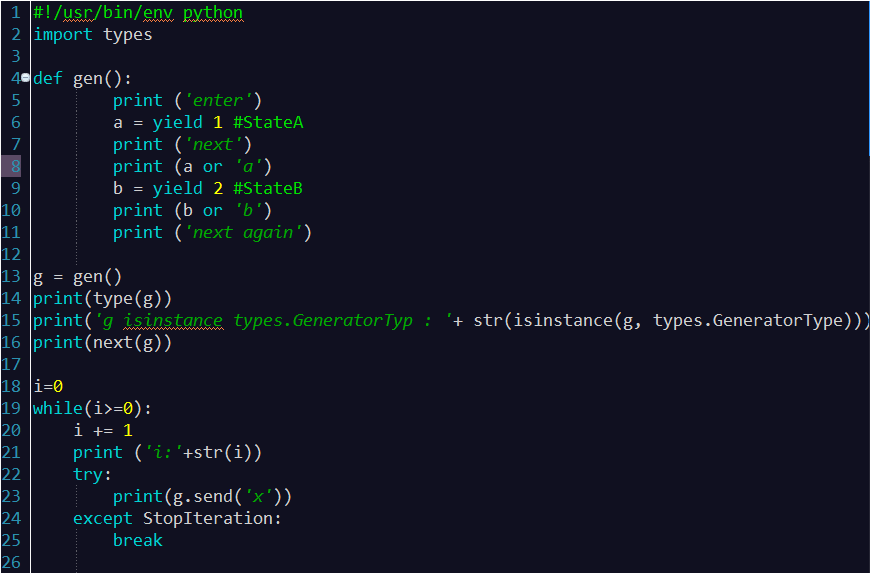
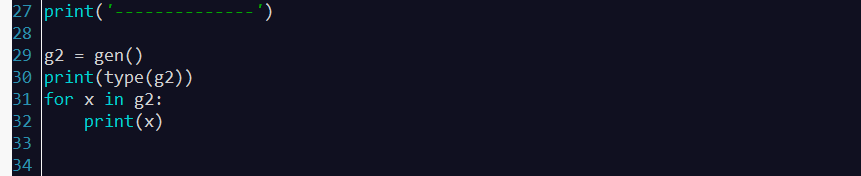

当定义的方法和函数中有yield关键字 ，这个执行这个函数或者方法就将返回一个生成器对象，这个生成器对象可以被for循环迭代，也可以手动执行next或者send方法精准控制这个生成器的内部执行，我们看如下代码就可以简单理解 yield，next和send之间的关系和用法：
#!/usr/bin/env python import types def gen(): print ('enter') a = yield 1 # StateA print ('next') print (a ) b = yield 2 # StateB print (b or 'b') print ('next again') g = gen() print(type(g)) print('g isinstance types.GeneratorTyp : '+ str(isinstance(g, types.GeneratorType))) print(next(g)) i=0 while(i>=0): i += 1 print ('i:'+str(i)) try: print(g.send('x')) except StopIteration: break print('--------------') g2 = gen() print(type(g2)) for x in g2: print(x)
运行结果：
<class 'generator'> g isinstance types.GeneratorTyp : True enter 1 i:1 next x 2 i:2 x next again -------------- <class 'generator'> enter 1 next None 2 b next again
详细解释一下执行过程：
1 定义生成器函数：
def gen()
2 获得迭代器对象，并赋值给g，同时我们打印g的类型，返回generator，可以看到我们类型判断为 generator：
g = gen()
3 执行迭代器到到第一个yield处，此处打印1,然后迭代器就挂起了，等待下一次调用，我们暂时命名此出挂起状态为StateA。
print(g.next())
4 进入while循环，第一次执行循环，打印“i:1”，然后执行如下代码：
print(g.send('x'))
上述代码将继续 StateA 状态开始执行，首先将字符串“x”发送到迭代器中，然后迭代器开始运行，将字符串“x”复制给变量a，然后打印出：
print 'next' #next print a or 'a' #x
接着运行到下一个 yield，返回yield值“2”到send函数，于是在while循环中就打印出了“2”，这时迭代器函数的状态运行到StateB。
5 再次进入while循环，send函数将字符串“x”传递进迭代器，赋值给b，这样迭代器就打印出：
print b or 'b' #x print 'next again' #next again
然后由于迭代器中没有 yield 操作，将抛出一个 StopIteration 异常，我们接受到 StopIteration 异常就终止循环。
6 通过使用for循环来迭代一个迭代器对象更简单，不需要判断 StopIteration 异常就可以获取yield传出来的值，直接将其打印出。
self：

如上图；大概是这样执行的：
首先定义了一个gen()函数（注意并没有去执行），然后将这个函数赋值给g；g打印两行（14、15行）；然后执行next(g)，也就是执行gen()函数；于是开始执行gen函数，输出’enter’，然后yield 1将1返回出来，也就是返回给next(g)，next(g)收到1后通过print()函数将它打印出来。与此同时要注意的是，yield将1返回出去以后就会停止执行，直到下一次的next或send方法执行。
接下来就开始执行下面的while循环。i=1，打印出i:1。然后执行第23行；g.send(‘x’)将x传给“gen()函数”，并且被第6行的yield接收到（注意此时“gen()函数”还停留在第6行中的yield），yield接收到后将这个值将这个值传给a，然后执行第7行的打印‘next’；然后执行第8行的print (a or 'a')，因为此时a为字符串x，所以将字符串x打印出来；打印完成后，执行到第19行的yield，此时yield 2将2返回出去（并且停留在这里），也就是返回给g.send('x')，然后再通过print(g.send('x'))打印出来，也就是打印出 2 。
接下来继续执行while循环，此时i=2。然后打印i:2，然后再执行g.send(‘x’)，将字符串x传出去，传出去后gen()函数通过yield接收到，然后将它赋值给b，然后打印print (b or 'b')，打印print ('next again')；注意此时，将上述两个打印执行完成以后，它会继续往下执行知道遇到下一个yield然后停留在下一个yield处；但是它发现下面已经没有yield了，于是它就会抛出一个StopIteration 异常。 然后下面的while循环捕捉到这个异常然后break退出循环。

然后继续往下执行。打印——等。
然后到了第31行执行for循环。执行for循环的时候，将g2执行完成后“代入”到x中（作为x；或者“返回给x”（如果有返回值的话）），然后执行下面的print(x)。 那么具体的就是，先执行第一次循环，与上面的类似，打印出enter，将yield 1返回出去到第31行中的g2，g2将1“代入”到x，然后通过第32行的print(x)给打印出来。打印完成后，继续执行for循环，然后 由于没有返回值，那么第6行中的yield就不会收到任何值 ，那么a什么也没接收到，所以在打印出next继续执行第8 行的时候打印的就是字符串a（之所以打印的是字符串a是因为print (a or 'a')；如果你把它改成print (a)，那么此处输出（打印出）的就会是None，说明a什么也没接收到。） ；打印完成后，继续执行到第9行，然后通过yield 2将2返回出去（返回出去后），与上述过程类似，g2接收到2然后“代入”到x通过32行打印出来。接下来执行第3次循环，同上面类似，继续执行打印字符串b打印next agin，然后继续往下执行寻找“停靠点”时发现没有yield了；于是抛出一个StopIteration 异常，然后传到for循环中，于是for循环就会退出循环。
（生成器的 next 方法可以手动调用也可以由 for 循环实现。）
程序执行结束。